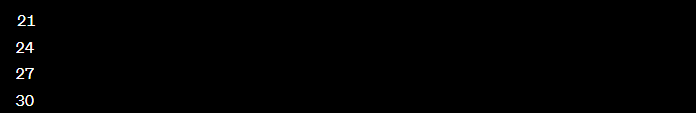
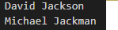

Level 2:
- Tạo 1 List có 10 phần tử là các số tự nhiên từ 21 đến 30. In những số chia hết cho 3 ra ngoài màn hình. Gợi ý(sử dụng câu lệnh if else)
Kết quả:

-
Tạo 1 list cho trước là họ và tên của 5 người khác nhau. Kiểm tra nếu ai có chữ Jack trong tên thì in ra ngoài màn hình.
Kết quả:

-
Tạo 1 mảng có 10 số khác nhau. Tìm số bé nhất trong mảng.
Return to HomePage.